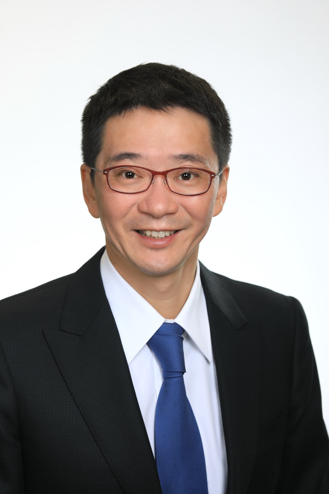

ご挨拶
塩飽哲生です。しわく てつお
この度はご縁をいただきありがとうございます。私がいまSIMYで何を作ろうとしているのか、短くまとめました。
- これまで
- 医療・ヘルスケア、AI、教育領域で起業と事業づくりをしてきました。
- 起業
- シリアルアントレプレナーとして、複数の事業立ち上げに取り組んできました。
- 背景
- 東京大学工学部・同大学院修了。5人の子どもの父です。
ChatGPTが出てきたときに、世界の叡智を誰でも手に入れられる時代が来た、と思いました。
子どもでも、大人でも、今までなら一部の人しか触れられなかった知識にアクセスできる。これはすごいことだと思いました。
壁にぶつかったときに、例えばイーロン・マスクだったらどう考えるだろう。同じような修羅場をくぐって、大きな会社を作った先人たちは、どう解決するだろう。そういう問いを、誰でも持てるようになった。
ただし、AIを使いこなせる人と、そうではない人の格差は広がっていくと思います。同じAIを使っていても、出てくる結果はまったく違う。仕事の速さも、判断の質も、挑戦できる範囲も変わっていく。
どこよりも簡単に。
どこよりも正確に。
どこよりも簡潔に。
AIを使いこなすためのプラットフォームが必要だと思っています。
それがSIMYです。
そして、AIを使いこなすだけでも足りないと思っています。大事なのは、その知識を使って、PCの前から離れて、現実空間でどれだけ活動するかです。
これまでの仕事は、PCの前に座って、画面と向き合って、手を動かす時間が多かったと思います。AIに質問し、AIと対話して、作業を進める。それはもちろん大事です。
でも、これからはそれだけではなく、人と人が会って、そこで仕事が生まれる。新しいことに挑戦する。そういう時間がもっと大事になると思っています。
成果の90%を生む、上位10%に集中する。
そのために、AIに任せられるところは任せる。
調べる、まとめる、下書きする、確認する、次のアクションを整理する。そういった仕事をAIが進めることで、人は本当に大事な判断や、人に会うことに集中できる。
SIMYは、そのために作っています。AIを使いこなし、その知識を現実の行動につなげるためのものにしたいと思っています。
少しでもご関心いただきましたら、ぜひ一度、ご連絡をいただけましたら幸いです。
AIを導入するかどうかの話の前に、まず今の仕事のどこをAIに任せられるか、人がどこに集中すべきかを一緒に整理できればと思っています。